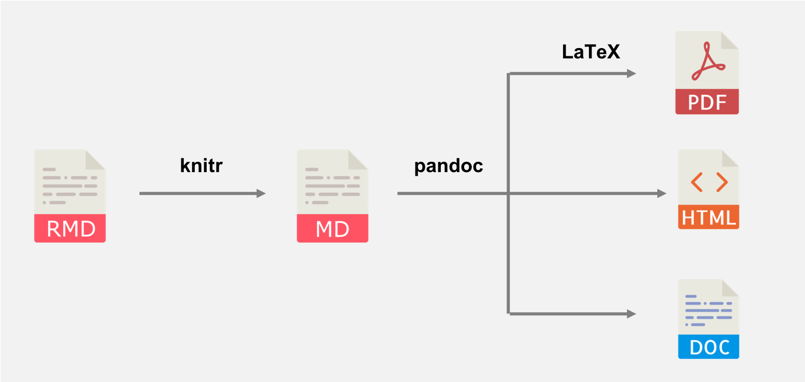
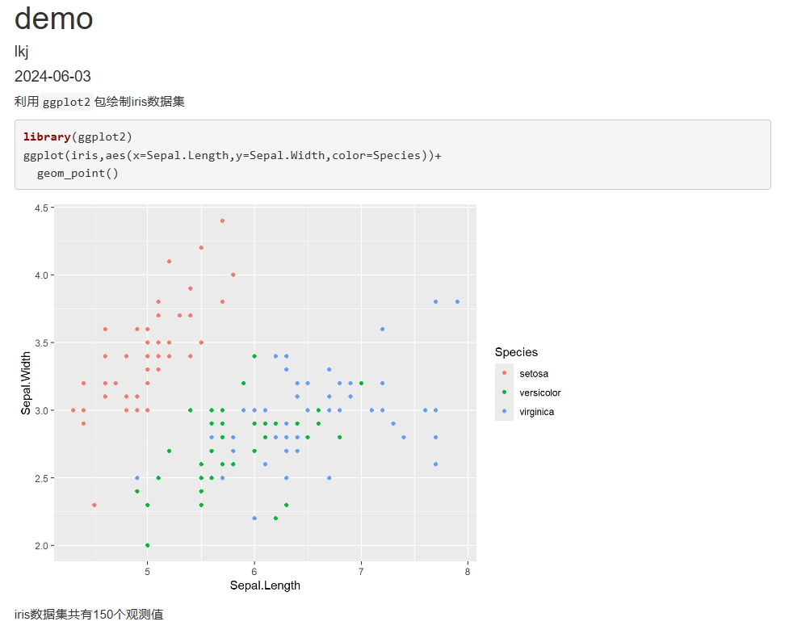
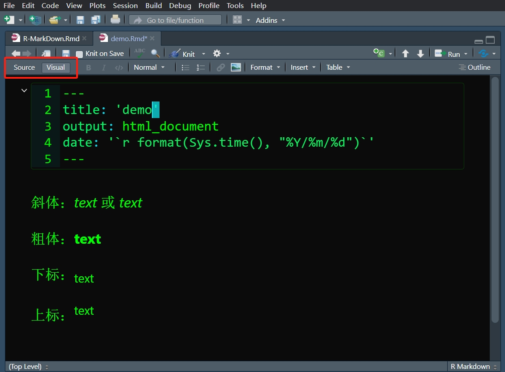

1.2 初识RMD
R Markdown，顾名思义，是R和Markdown的组合。Markdown是一种标记语言，允许人们用易读易写的纯文本格式编写文档。而R Markdown则是Markdown的扩展，是一种结合了R代码（也可以结合其他语言的代码）、Markdown以及结果的强大工具，它允许用户在一个文档中同时编写文本、插入R代码并执行，然后将结果（如数据摘要、统计图表等）直接嵌入文档中。
R Markdown主要依靠knitr包和Pandoc来完成工作，其工作流如下所示。knitr是谢益辉大神开发的一个用R来优雅、灵活、快速地生成动态报告的包。Pandoc是一个文档转换工具，它可以将文档从一种格式转换为另一种格式，同时保留文档的格式和结构。

图 1.2: 工作流
RMD文档由三部分组成：元数据（metadata）、文本与代码。
元数据出现在文档开头，由’- - -‘隔开，用来控制标题、作者、日期、输出格式等基础信息。特别是输出格式这一部分，在后面的章节会再次提及。值得注意的是，元数据是用YAML的语法编写，在具体编辑的时候要注意缩进以及适当换行，并且使用’: ’来隔开键与值（注意空格）。如果你想了解更多，可查阅Pandoc手册。
在设置好元数据后，你就可以利用markdown语法来进行创作了。这一部分将在1.3节介绍。
代码可以分为两个部分。一个是内联（inline）代码，首尾用反引号（键盘左上角）来将代码括起来，即 `code`1 ，如果你想用R来运行内联代码的话，可以用`r code`。另一个是代码块（code chunk），首尾用三个反引号隔开（注意换行）或缩进四个空格来表示纯代码，如果你想用R来运行代码块的话，可以改为```{r} code ```2，注意{r}后面得换行。关于代码块的设置将会在1.3.7节详细介绍。
以上就是RMD的基本组成。接下来可以尝试着自己创建一个RMD文档并输出为HTML。
---
title: "demo"
author: "lkj"
date: "`r format(Sys.time(), "%Y/%m/%d")`"
output: html_document
---
利用`ggplot2`包绘制iris数据集
```{r}
library(ggplot2)
ggplot(iris,aes(x=Sepal.Length,y=Sepal.Width,color=Species))+
geom_point()
```
iris数据集共有`r nrow(iris)`个观测值你输出的结果应该如下所示。

图 1.3: 用ggplot2绘制图片
在RStudio中，RMD除了直接编辑代码的Source模式，还有类似Word这种所见即所得的Visual模式。在Visual模式中，你可以直接观察到RMD的效果，并且可以在工具栏处找到插入图片、表格、emoji等功能，更多的功能等待你自行探索。

图 1.4: Source模式与Visual模式